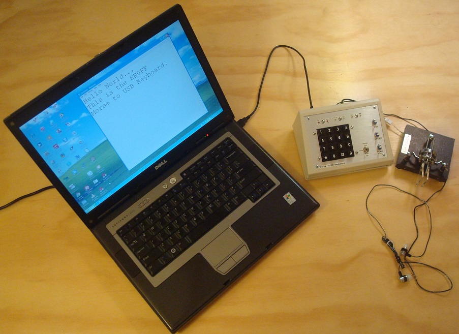

|

|

|
This page provides software support information for the Morse HID Project Software Source Code
This is a Morse code keyboard input device for any PC that conforms to the "standard" USB HID configuration for a keyboard input device.
A small microcontroller is used to capture key inputs from a Morse code paddle or straight key and convert them to USB-HID keystrokes.
The source code repo is available at GitHub: http://www.github.com/ke0ff/Morse-HID
The repo is open for download, but at the moment is closed to collaboration. You may access and use the repo within the limits of the license identifed therein.
|